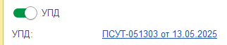

Инструкция по формированию первичной бухгалтерской документации в 1С 8.3
Комплексное руководство для новых сотрудников
Оглавление
- 1. Основы оприходования документации и внесения в 1С
- 2. Заведение номенклатуры и номенклатурных групп
- 3. Типовые проводки для товаров и материалов
- 4. Создание реализации по тендерным документам
- 5. Выставление услуг по мониторингу ТС
- 6. Акты сверки взаиморасчетов
- 7. Анализ субконто и зачеты между договорами
1. Основы оприходования документации и внесения в 1С
1.1. УПД и счета-фактуры
Шаг 1: Для отображения процесса поступления товаров и услуг от поставщика в программе 1С:Бухгалтерия предусмотрен раздел «Покупки/Поступления (акты, накладные)».
Для оформления поступления товаров и услуг:
- Перейдите в раздел "Покупки"
- Выберите "Поступление (акты, накладные, УПД)"
- Нажмите "Создать" и выберите вид документа
Шаг 2: Заполнение основных реквизитов
Обязательные поля для заполнения:
| Поле | Описание | Обязательность |
|---|---|---|
| Дата | Дата поступления товара/услуги | Да |
| Контрагент | Поставщик товаров/услуг | Да |
| Договор | Договор с поставщиком | Да |
| Склад | Склад поступления (для товаров) | Для товаров |
| Склад учета Навикона: | «Основной склад»- для текущей деятельности или «Склад Бульвар Строителей» | для ремонтных работ офиса, обслуживания |
Шаг 3: Заполнение табличной части
В табличной части указываете:
- Номенклатуру - выбираете из справочника или создаете новую
- Количество - фактическое количество поступившего товара
- Цену - цену за единицу без НДС
- Ставку НДС - согласно документам поставщика
- Счет учета - автоматически заполняется по виду номенклатуры
Переносим данные из первичных документов в табличную часть Поступления, обращаем внимание на НДС в документе, итоговая сумма документа и сумма НДС должны совпадать с первичным документом от Поставщика.
Если документ приходуется на ООО на Общей системе НО, обязательно смотрим на заполнение полей и дату отражения НДС в учёте и книге Покупок.
или
2. Заведение номенклатуры в 1С, номенклатурных групп
2.1. Создание номенклатуры
Шаг 1: Переход к справочнику
Для создания новой номенклатуры:
- Перейдите в раздел "Справочники"
- Выберите "Номенклатура и склад"
- Откройте "Номенклатура"
- Нажмите "Создать"
Шаг 2: Заполнение карточки номенклатуры
В зависимости от типа приходуемой номенлатуры заводим товар/услугу или выбираем из имеющихся.
| Поле | Описание | Пример |
|---|---|---|
| Наименование | Полное название товара/услуги | Услуги по мониторингу ТС |
| Вид номенклатуры | Товар, Услуга, Работа и т.д. | Услуга |
| Единица измерения | Базовая единица измерения | шт, кг, м, услуга |
| Номенклатурная группа | Группа для учета затрат | Услуги мониторинга |
2.2. Настройка номенклатурных групп
Создание номенклатурной группы
Путь к справочнику:
- Раздел "Справочники"
- "Доходы и расходы"
- "Номенклатурные группы"
Примеры номенклатурных групп
| Группа | Назначение | Применение |
|---|---|---|
| Оптовая торговля | Товары для перепродажи | Счет 90.01.1 |
| Услуги мониторинга | Услуги по отслеживанию ТС | Счет 90.01.2 |
| Материалы производства | Сырье и материалы | Счет 20.01 |
| Готовая продукция | Произведенная продукция | Счет 43.01 |
3. 3. Типовые проводки для оприходования товаров/материалов. Статьи учёта, номенклатурные группы, счета списания доходов, расходов, НДС
3.1. Поступление товаров
| Операция | Дебет | Кредит | Описание |
|---|---|---|---|
| Поступление товаров | 41.01 | 60.01 | Товары на складе |
| НДС к вычету | 19.03 | 60.01 | НДС по приобретенным товарам |
| Принятие НДС к вычету | 68.02 | 19.03 | Зачет НДС к доплате |
| Оплата поставщику | 60.01 | 51 | Расчеты с поставщиком |
Пример прихода товаров в Навикон:

3.2. Поступление материалов
| Операция | Дебет | Кредит | Описание |
|---|---|---|---|
| Поступление материалов | 10.01 | 60.01 | Сырье и материалы |
| НДС к вычету | 19.03 | 60.01 | НДС по материалам |
| Списание в производство | 20.01 | 10.01 | Затраты на производство |
Пример прихода товаров в Навикон:
Проводки по счету 10 формируем в соответствии с планом счетов.
3.3. Услуги
Пример: услуги доставки:
Важно!
Правильно выбрать номенклатурную группу и статью затрат для верного отражения расходов для налогообложения прибыли
4. Создание реализации по тендерным документам. Нюансы и ключевые моменты корректного составления документов.
4.1. Подготовка к оформлению
Шаг 1: Анализ тендерной документации
Перед созданием документов изучите:
- Техническое задание - что именно должно быть поставлено/выполнено
- Условия поставки - сроки, место, порядок приемки
- Требования к документам - форматы, обязательные реквизиты
- Особенности НДС - ставки, освобождения по 44-ФЗ
Шаг 2: Создание документа реализации
Путь в программе:
- Раздел "Продажи"
- "Реализация (акты, накладные, УПД)"
- Выберите тип документа согласно требованиям тендера
4.2. Ключевые моменты заполнения
| Поле | Особенности для тендеров | Пример |
|---|---|---|
| Контрагент | Точное наименование из реестра поставщиков | Министерство здравоохранения РФ |
| Договор | Номер и дата государственного контракта | № 0373100000324000001 от 15.03.2024 |
| Номенклатура | Наименование из ТЗ, ОКПД2 при необходимости | Услуги по техническому обслуживанию |
| Номенклатура в тендерной реализации должна ПОЛНОСТЬЮ (буквы, знаки препинания) совпадать со спецификацией к тендерному Договору, обязательно верное прописанное Основание реализации (Номер и дата Договора). | Сумма спецификации и тендерной реализации ,в т.ч. сумма НДС должна быть одинакова. Если реализаций по спецификации было несколько Также совместно с отгрузочными документами необходимо направить спецификацию-основание поставки, если она не подписана по ЭДО. УПД не подписанные по факту поставки кладовщиками клиента выгружаем по ЭДО и следим за подписанием. | Оплата тендерных реализаций осуществляется при наличии Полного подписанного пакета документов. |
4.3. Документооборот по госконтрактам
Особенности ЭДО в госсекторе
- Обязательный электронный документооборот через операторов ЭДО
- Требования к формату УПД для госзаказчиков
- Специальные отметки о соответствии 44-ФЗ/223-ФЗ
- Контроль сроков документооборота (не более 5 рабочих дней)
Чек-лист для тендерной реализации:
- ☑ Наименования соответствуют ТЗ
- ☑ Количества согласно спецификации
- ☑ Цены из протокола торгов
- ☑ Правильная ставка НДС
- ☑ Указан номер госконтракта
- ☑ Подготовлены сопроводительные документы
5. Выставление услуг по мониторингу ТС. Изучение текущего типового договора+ приложения. Порядок заключения договора. Отчетность технического отдела и составление массовых реализаций. Взаимодействие с клиентами.
Отчет по мониторингу
Договор с клиентом/заявку на заведение объекта в системе мониторинга предоставляет менеджер ОП в Технический отдел по установленной в организации форме.
Документ
На основании заявки, в которой сообщается форма расчетов, стоимость за объект обслуживания и данные клиента Бухгалтерия создает в 1с Договор обслуживания систем мониторинга.
Выставление счетов на услуги по мониторингу ТС осуществляется 1-го числа каждого календарного месяца на основании отчета Технического отдела о кол-ве объектов транспорта, подключенного к системе мониторинга ТС у клиента.
По окончанию календарного месяца Бухгалтер должен выставить Акт оказания услуг на сновании счёте, отправить клиенту оригинал почтой России/по ЭДО.
До 15 числа каждого календарного месяца создается отчет по Дебиторский задолженности по услугам Мониторинга для дальнейшей работы по задолженностям с клиентами.
6. Акта сверки взаиморасчетов между контрагентами.
6.1. Назначение и виды актов сверки
Виды актов сверки
- С поставщиками - сверка кредиторской задолженности
- С покупателями - сверка дебиторской задолженности
- Внутренние - между подразделениями компании
- По договорам - детализация по отдельным соглашениям
6.2. Создание акта сверки в 1С
Шаг 1: Переход к документу
Для создания акта сверки:
- Раздел "Покупки" → "Акты сверки расчетов" (для поставщиков)
- Раздел "Продажи" → "Акты сверки расчетов" (для покупателей)
- Нажмите "Создать"
Шаг 2: Заполнение параметров
| Поле | Описание | Обязательность |
|---|---|---|
| Дата | Дата составления акта | Да |
| Контрагент | С кем сверяем расчеты | Да |
| Период сверки | С какой даты по какую | Да |
| Договор | Конкретный договор или все | Нет |
| Валюта | В какой валюте сверка | Да |
Шаг 3: Формирование данных
После заполнения параметров:
- Нажмите кнопку "Заполнить" - система автоматически подтянет обороты
- Проверьте правильность сумм по данным организации
- Заполните вкладку "По данным контрагента" согласно его учету
- Сверьте расхождения и укажите их причины
- Сохраните и распечатайте документ

6.3. Анализ расхождений
Типичные причины расхождений
| Причина | Описание | Способ устранения |
|---|---|---|
| Документы в пути | Не поступили первичные документы | Получить копии документов |
| Разные даты отражения | Операции учтены в разных периодах | Уточнить правильные даты |
| Курсовые разности | Операции в валюте | Пересчет по курсу ЦБ |
| Ошибки ввода | Технические ошибки в учете | Исправительные проводки |
6.4. Регламент проведения сверок
Периодичность сверок
- Ежемесячно - с основными контрагентами
- Ежеквартально - с менее активными партнерами
- Перед инвентаризацией - обязательно
- По требованию - при возникновении спорных вопросов
7. Анализ субконто за прошедший календарный месяц, за квартал. Проведение зачета между договорами контрагента.
После проведения всех первичных документов реализаций, поступлений, отражения Прихода и Расхода ДС, необходимо сделать «Операцию»- Закрытие месяца, для корректного формирования проводок.
7.1. Анализ субконто за месяц/квартал
Основные отчеты для анализа
Для проведения анализа используйте:
- "Оборотно-сальдовая ведомость по счету" - детальный анализ оборотов
- "Карточка счета" - хронология операций
- "Анализ субконто" - специализированный отчет
- "Взаиморасчеты с контрагентами" - состояние расчетов
Пошаговый анализ
- Откройте отчет - Раздел "Отчеты" → "Стандартные отчеты" → "Анализ субконто"
- Настройте параметры - выберите счет (например, 60.01), период, валюту
- Добавьте группировки - по контрагентам, договорам, документам
- Установите отборы - при необходимости ограничьте выборку
- Сформируйте отчет - проанализируйте результаты
Пример сформированного анализа субконто:
После формирования и анализа Сальдо на конец периода при обнаружении ошибок в учёте/разнесении в рамках Договоров клиента необходимо проверить закрытие остатков на субсчетах 60.02 и 62.02.
При необходимости корректировки остатков взаиморасчетов или наличии акта о взаимозачёте от сторонней организации необходим провести п. 7.3
7.3. Проведение зачетов между договорами
Условия для зачета
Зачет возможен при соблюдении условий:
- Односторонность требований - оба обязательства перед одним контрагентом
- Однородность - требования выражены в одной валюте
- Срок исполнения - наступил или не указан
- Отсутствие споров - по существу требований
Документальное оформление зачета
- Создайте документ - "Корректировка долга" в разделе "Банк и касса"
- Укажите тип операции - "Зачет задолженностей"
- Заполните дебиторскую часть - сумма к доплате нам
- Заполните кредиторскую часть - сумма к доплате контрагенту
- Приложите обоснование - акт сверки, соглашение о зачете
Проводки по зачету
| Операция | Дебет | Кредит | Сумма |
|---|---|---|---|
| Зачет дебиторской задолженности | 60.01 | 62.01 | Сумма зачета |
| Доплата покупателю (если переплата) | 60.01 | 51 | Сумма доплаты |
| Доплата поставщику (если недоплата) | 51 | 62.01 | Сумма доплаты |
Пример зачета:
ООО "Клиент" одновременно является поставщиком (долг нам 100 000 руб.) и покупателем (долг ему 80 000 руб.)
- Дт 60.01 Кт 62.01 - 80 000 руб. (зачет)
- Остаток к доплате нам: 20 000 руб.
7.4. Контрольные процедуры
Ежемесячные процедуры
- Сверка оборотов - контроль соответствия первичке
- Анализ просроченной задолженности - выявление проблемных долгов
- Проверка корректности субконто - правильность аналитики
- Выявление возможностей зачета - оптимизация расчетов